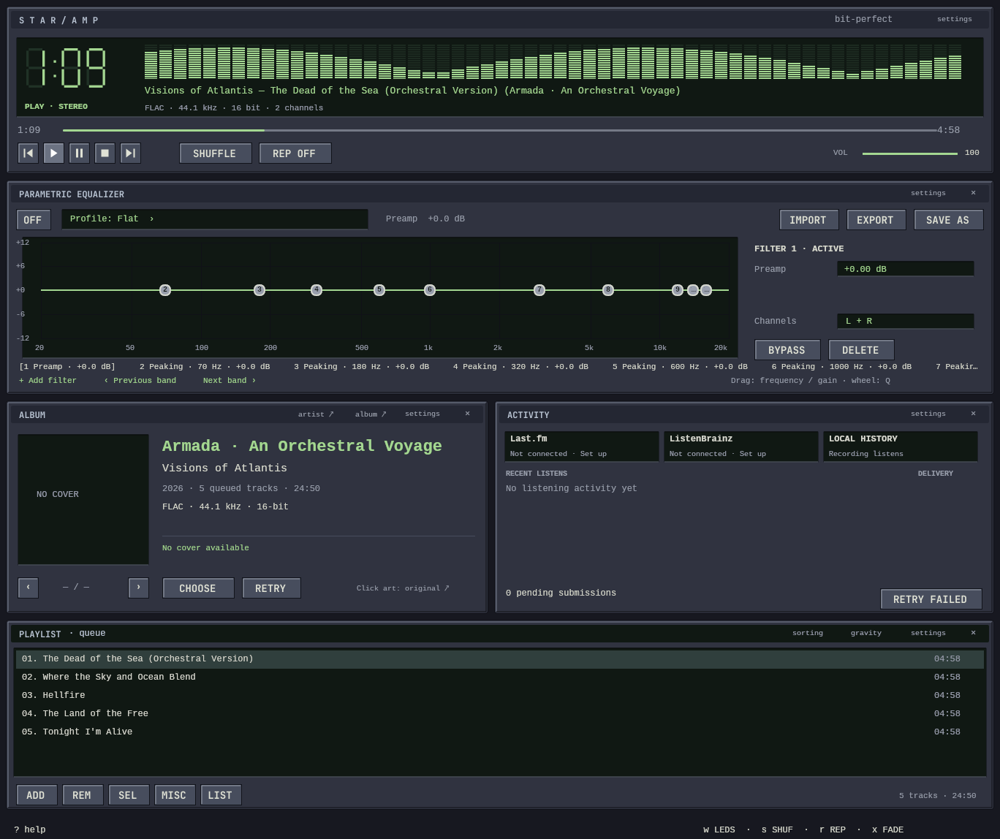
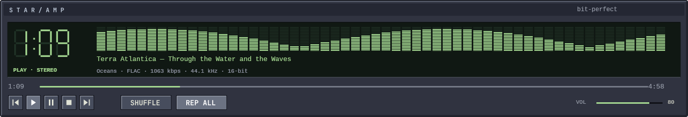
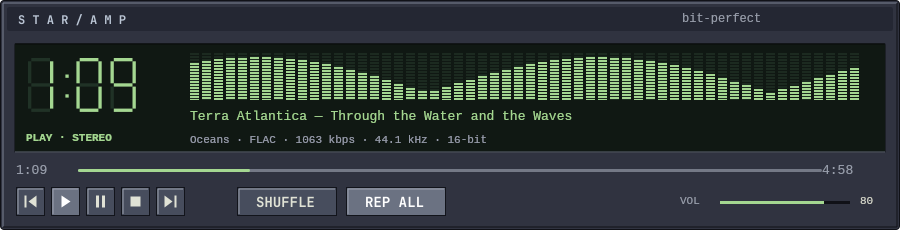

Selected full-rack reference. Images appear at natural size at 100% browser zoom. These are actual production component renders with fixture data, separate from the isolated skin example. They do not establish user acceptance or Mac/SSH performance.

The full rack now uses the reference palette, bitmap chrome and fixed-label lettering. Live metadata, EQ profiles, cover availability, listening history and queue contents determine what appears in each module. At narrow sizes Album and Activity stack; player controls stay fixed while the lower modules scroll. Original 2× production render.

Clock spacing, transport glyphs and fixed labels use original 1×/2× bitmaps. Colors and proportions are calibrated against the selected source. Live variable text remains shaped Unicode; terminal font rendering and physical Mac/SSH visual comparisons still require review.

Original 2× renders: 1352 logical width · 900 logical width.